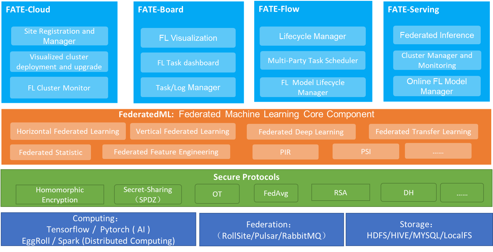

联邦学习介绍
联邦学习的出现解决什么问题
解决“数据孤岛”问题，保证数据安全与隐私保护。
由于各种原因，数据孤岛问题普遍存在。在用户和企业角度下，商业公司所拥有的数据往往都有巨大的潜在价值。两个公司甚至公司间的部门都要考虑利益的交换，往往这些机构不会提供各自数据与其他公司做与单的聚合，导致即使在同一个公司内，数据也往往以孤岛形式出现。
联邦学习的概念
本质：联邦学习本质上是一种分布式机器学习技术，或机器学习框架。
目标：联邦学习的目标是在保证数据隐私安全及合法合规的基础上，实现共同建模，提升AI模型的效果。
联邦学习的分类
根据每个参与共同建模的企业称为参与方，根据多参与方之间数据分布的不同，把联邦学习分为三类：横向联邦学习、纵向联邦学习和联邦迁移学习。
- 横向联邦适用于，参与方之间的数据特征相似，但样本不同。
- 纵向联邦适用于，参与方之间的数据特征重叠多，但样本重叠少。
- 联邦迁移学习则适用于，参与方之间的数据特征重叠少，样本重叠也少。
这三种类型的联邦学习的学习过程不太相同，这里不做详细描述。
联邦学习框架
据了解，联邦学习框架有Fate、PySyft、FedLab、Rosetta、PaddleFL等等。具体可参见联邦学习开源框架调研
不同框架的受众定位、加密手段、支持的算法、开发的机构不同。下面是对比图。图片来源于Fate官网。
这张图时间比较久了，具体还是要看最新版本。
Fate介绍
FATE (Federated AI Technology Enabler) 是微众银行AI部门发起的开源项目，为联邦学习生态系统提供了可靠的安全计算框架。FATE项目使用多方安全计算 (MPC) 以及同态加密 (HE) 技术构建底层安全计算协议，以此支持不同种类的机器学习的安全计算，包括逻辑回归、基于树的算法、深度学习和迁移学习等。
Fate架构

其中，
- FATE Board：联邦学习可视化界面。
- FATE Flow：联邦学习端到端全流程的多方联合任务安全调度平台，提供生产级的服务能力。
- FATE Serving：在线模型管理服务（只支持纵向联邦学习）
- FederatedML：联邦学习的核心组件
- Secure Protocols：FATE的安全协议
FATE核心功能
- 联邦在线模型服务（FATE Serving）
- 联邦建模Pipline和可视化（FATE Flow）
- 联邦学习算法的各个功能组件（FederatedML）
- 分布式计算和存储抽象（EggRoll）
- 跨站点网络通信抽象（Federated Network）
更多介绍
FATE github地址：https://github.com/FederatedAI/FATE
单机版FATE安装
这里采用docker安装
如果需要docker使用GPU资源，需要在docker容器启动时加上参数--gpus
docker run -d --gpus all --name standalone_fate -p 8080:8080 federatedai/standalone_fate:1.9.0 |
如果启动报类似错误：Error could not select device driver with capabilities: [[gpu]]，则查看下面的链接进行解决。
Centos7安装nvidia-container-toolkit
安装完成后，进入容器，要先执行命令：source bin/init_env.sh
FATE Board 默认用户名密码：admin/admin
想要修改用户名和密码
/data/projects/fate/fateboard/conf/application.properties
集群版
集群可以使用docker-compose或者kube安装，这里不做介绍。
集群版会加入eggroll、mysql之类的组件，其开放的端口如下：

9380端口是FATE flow调用api的接口，有哪些接口可以参看下面的链接。
https://federatedai.github.io/FATE-Flow/latest/zh/swagger/
集群安装后，每个节点应该有以下docker容器
fate@vm172-31-0-217:~$ docker ps |
集群开放的端口：
| port | service |
|---|---|
| 6080 | fate-board |
| 8350 | serving |
| 20000 | jupyter |
| 9370 | rollsite |
| 9380 | flow api |
这里我们使用了四个节点，分别是FATE9997-10000，其中FATE10000为arbiter用于将梯度聚合和分发，其余为guest/host，是参与联邦学习的各方。
Toy Test
安装完成后可以进行简单测试，以检查安装是否成功。10000是各个参与方的partyid
flow test toy -gid 10000 -hid 10000 |
Refs